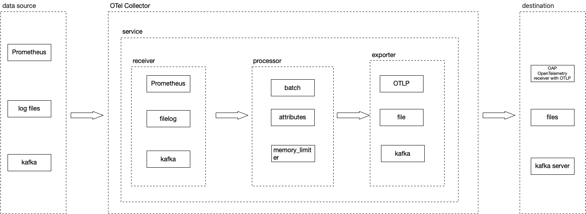
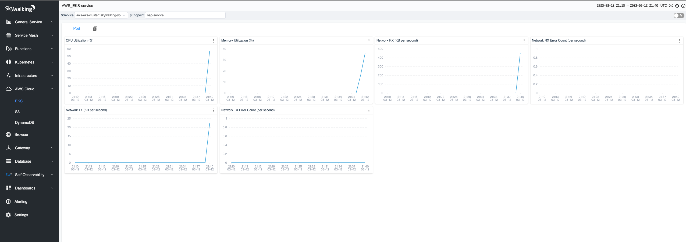

使用SkyWalking监控AWS EKS和S3

SKyWalking OAP 现有的 OpenTelemetry receiver 可以通过OTLP协议接收指标(metrics)，并且使用MAL实时分析相关指标。从OAP 9.4.0开始，SkyWalking 新增了AWS Firehose receiver，用来接收，分析CloudWatch metrics数据。本文将以EKS和S3为例介绍SkyWalking OAP 接收，分析 AWS 服务的指标数据的过程
EKS
OpenTelemetry Collector
OpenTelemetry (OTel) 是一系列tools，API，SDK，可以生成，收集，导出遥测数据，比如 指标(metrics)，日志(logs)和链路信息(traces)，而OTel Collector主要负责收集、处理和导出遥测数据，Collector由以下主要组件组成:
- receiver: 负责获取遥测数据，不同的receiver支持不同的数据源，比如prometheus ，kafka，otlp，
- processor：在receiver和exporter之间处理数据，比如增加或者删除attributes，
- exporter：负责发送数据到不同的后端，比如kafka，SkyWalking OAP(通过OTLP)
- service: 作为一个单元配置启用的组件，只有配置的组件才会被启用
OpenTelemetry Protocol Specification(OTLP)
OTLP 主要描述了如何通过gRPC，HTTP协议接收(拉取)指标数据。SKyWalking OAP的 OpenTelemetry receiver 实现了OTLP/gRPC协议，通过OTLP/gRPC exporter可以将指标数据导出到OAP。通常一个Collector的数据流向如下:

使用OTel监控EKS
EKS的监控就是通过OTel实现的，只需在EKS集群中以DaemonSet 的方式部署 OpenTelemetry Collector，使用 AWS Container Insights Receiver 作为receiver，并且设置otlp exporter的地址为OAP的的地址即可。另外需要注意的是OAP根据attribute job_name : aws-cloud-eks-monitoring 作为EKS metrics的标识，所以还需要再collector中配置一个processor来增加这个属性
OTel Collector配置demo
extensions:
health_check:
receivers:
awscontainerinsightreceiver:
processors:
# 为了OAP能够正确识别EKS metrics，增加job_name attribute
resource/job-name:
attributes:
- key: job_name
value: aws-cloud-eks-monitoring
action: insert
# 指定OAP作为 exporters
exporters:
otlp:
endpoint: oap-service:11800
tls:
insecure: true
logging:
loglevel: debug
service:
pipelines:
metrics:
receivers: [awscontainerinsightreceiver]
processors: [resource/job-name]
exporters: [otlp,logging]
extensions: [health_check]
SkyWalking OAP 默认统计 Node，Pod，Service 三个维度的网络、磁盘、CPU等相关的指标数据，这里仅展示了部分内容
Pod 维度

Service 维度

EKS监控完整配置
Click here to view complete k8s resource configuration
apiVersion: v1
kind: ServiceAccount
metadata:
name: aws-otel-sa
namespace: aws-otel-eks
---
kind: ClusterRole
apiVersion: rbac.authorization.k8s.io/v1
metadata:
name: aoc-agent-role
rules:
- apiGroups: [""]
resources: ["pods", "nodes", "endpoints"]
verbs: ["list", "watch"]
- apiGroups: ["apps"]
resources: ["replicasets"]
verbs: ["list", "watch"]
- apiGroups: ["batch"]
resources: ["jobs"]
verbs: ["list", "watch"]
- apiGroups: [""]
resources: ["nodes/proxy"]
verbs: ["get"]
- apiGroups: [""]
resources: ["nodes/stats", "configmaps", "events"]
verbs: ["create", "get"]
- apiGroups: [""]
resources: ["configmaps"]
resourceNames: ["otel-container-insight-clusterleader"]
verbs: ["get","update"]
- apiGroups: ["coordination.k8s.io"]
resources: ["leases"]
verbs: ["create","get","update"]
---
kind: ClusterRoleBinding
apiVersion: rbac.authorization.k8s.io/v1
metadata:
name: aoc-agent-role-binding
subjects:
- kind: ServiceAccount
name: aws-otel-sa
namespace: aws-otel-eks
roleRef:
kind: ClusterRole
name: aoc-agent-role
apiGroup: rbac.authorization.k8s.io
---
apiVersion: v1
kind: ConfigMap
metadata:
name: otel-agent-conf
namespace: aws-otel-eks
labels:
app: opentelemetry
component: otel-agent-conf
data:
otel-agent-config: |
extensions:
health_check:
receivers:
awscontainerinsightreceiver:
processors:
resource/job-name:
attributes:
- key: job_name
value: aws-cloud-eks-monitoring
action: insert
exporters:
otlp:
endpoint: oap-service:11800
tls:
insecure: true
logging:
loglevel: debug
service:
pipelines:
metrics:
receivers: [awscontainerinsightreceiver]
processors: [resource/job-name]
exporters: [otlp,logging]
extensions: [health_check]
---
apiVersion: apps/v1
kind: DaemonSet
metadata:
name: aws-otel-eks-ci
namespace: aws-otel-eks
spec:
selector:
matchLabels:
name: aws-otel-eks-ci
template:
metadata:
labels:
name: aws-otel-eks-ci
spec:
containers:
- name: aws-otel-collector
image: amazon/aws-otel-collector:v0.23.0
env:
# Specify region
- name: AWS_REGION
value: "ap-northeast-1"
- name: K8S_NODE_NAME
valueFrom:
fieldRef:
fieldPath: spec.nodeName
- name: HOST_IP
valueFrom:
fieldRef:
fieldPath: status.hostIP
- name: HOST_NAME
valueFrom:
fieldRef:
fieldPath: spec.nodeName
- name: K8S_NAMESPACE
valueFrom:
fieldRef:
fieldPath: metadata.namespace
imagePullPolicy: Always
command:
- "/awscollector"
- "--config=/conf/otel-agent-config.yaml"
volumeMounts:
- name: rootfs
mountPath: /rootfs
readOnly: true
- name: dockersock
mountPath: /var/run/docker.sock
readOnly: true
- name: varlibdocker
mountPath: /var/lib/docker
readOnly: true
- name: containerdsock
mountPath: /run/containerd/containerd.sock
readOnly: true
- name: sys
mountPath: /sys
readOnly: true
- name: devdisk
mountPath: /dev/disk
readOnly: true
- name: otel-agent-config-vol
mountPath: /conf
- name: otel-output-vol
mountPath: /otel-output
resources:
limits:
cpu: 200m
memory: 200Mi
requests:
cpu: 200m
memory: 200Mi
volumes:
- configMap:
name: otel-agent-conf
items:
- key: otel-agent-config
path: otel-agent-config.yaml
name: otel-agent-config-vol
- name: rootfs
hostPath:
path: /
- name: dockersock
hostPath:
path: /var/run/docker.sock
- name: varlibdocker
hostPath:
path: /var/lib/docker
- name: containerdsock
hostPath:
path: /run/containerd/containerd.sock
- name: sys
hostPath:
path: /sys
- name: devdisk
hostPath:
path: /dev/disk/
- name: otel-output-vol
hostPath:
path: /otel-output
serviceAccountName: aws-otel-sa
S3
Amazon CloudWatch
Amazon CloudWatch 是AWS提供的监控服务，负责收集AWS 服务，资源的指标数据，CloudWatch metrics stream 负责将指标数据转换为流式处理数据，支持输出json，OTel v0.7.0 两种格式。
Amazon Kinesis Data Firehose (Firehose)
Firehose 是一项提取、转换、加载（ETL）服务，可以将流式处理数据以可靠方式捕获、转换和提供到数据湖、数据存储(比如S3)和分析服务中。
为了确保外部服务能够正确地接收指标数据， AWS提供了 Kinesis Data Firehose HTTP Endpoint Delivery Request and Response Specifications (Firehose Specifications)。Firhose以POST的方式推送Json数据
Json数据示例
{
"requestId": "ed4acda5-034f-9f42-bba1-f29aea6d7d8f",
"timestamp": 1578090901599
"records": [
{
"data": "aGVsbG8="
},
{
"data": "aGVsbG8gd29ybGQ="
}
]
}
- requestId: 请求id，可以实现去重，debug目的
- timestamp: Firehose 产生该请求的时间戳(毫秒)
- records: 实际投递的记录
- data: 投递的数据，以base64编码数据，可以是json或者OTel v0.7.0格式，取决于CloudWatch数据数据的格式(稍后会有描述)。Skywalking目前支持OTel v0.7.0格式
aws-firehose-receiver
aws-firehose-receiver 就是提供了一个实现了Firehose Specifications的HTTP Endpoint:/aws/firehose/metrics。下图展示了通过CloudWatch监控DynamoDB，S3等服务，并利用Firehose将指标数据发送到SKywalking OAP的数据流向

从上图可以看到 aws-firehose-receiver 将数据转换后交由 OpenTelemetry-receiver处理 ，所以 OpenTelemetry receiver 中配置的 otel-rules 同样可以适用CloudWatch metrics
注意
- 因为 Kinesis Data Firehose 要求，必须在AWS Firehose receiver 前放置一个Gateway用来建立HTTPS链接。
aws-firehose-receiver将从v9.5.0开始支持HTTPS协议 - TLS 证书必须是CA签发的
逐步设置S3监控
- 进入 S3控制台，通过
Amazon S3 >> Buckets >> (Your Bucket) >> Metrics >> metrics >> View additional charts >> Request metrics为Request metrics创建filter

- 进入Amazon Kinesis 控制台，创建一个delivery stream，
Source选择Direct PUT,Destination选择HTTP Endpoint. 并且设置HTTP endpoint URL为https://your_domain/aws/firehose/metrics。其他配置项:Buffer hints: 设置缓存的大小和周期Access key与aws-firehose-receiver中的AccessKey一致即可Retry duration: 重试周期Backup settings: 备份设置，可选地将投递的数据同时备份到S3。

- 进入 CloudWatch控制台，
Streams标签创建CloudWatch Stream。并且在Select your Kinesis Data Firehose stream项中配置第二步创建的delivery stream。注意需要设置Change output format为OpenTelemetry v0.7.0。

至此，S3监控配置设置完成。目前SkyWalking默认收集的S3 metrics 展示如下

其他服务
目前SkyWalking官方支持EKS，S3，DynamoDB监控。 用户也参考 OpenTelemetry receiver 配置OTel rules来收集，分析AWS其他服务的CloudWatch metrics，并且通过自定义dashboard展示